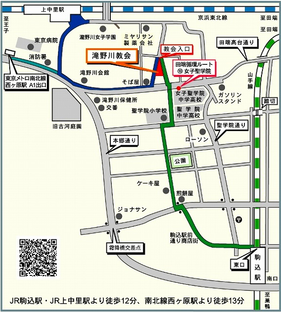

ご挨拶
日本ヴィオラ・ダ・ガンバ協会は本年、設立40周年を迎えます。
記念の年にあたり、協会では「過去から未来への橋渡し」というテーマのもと、いくつかの記念事業を企画しました。その一環として、本協会の名誉会員であるヴィーラント・クイケン氏を特別ゲストとしてお招きし、「記念演奏会」と「祝賀パーティ」を開催します。
日本でのガンバ演奏を開拓し支えてこられた重鎮たち、そして、これからを担っていってくれる次世代のかたたち、プロ、アマチュア、研究者、ガンバを共にするアンサンブルの面々など、多くの方がこの場で交わり、この場から次の空間へ出発していきたいと願っております。
イベント情報
- 日時： 2013年9月23日（月・祝）
- 記念演奏会： 午後2時 開演（午後1時30分 開場）
- 祝賀パーティー： 午後4時30分 開始（午後6時 終了予定）
- 特別ゲスト： ヴィーラント・クイケン氏
記念演奏会
- ヴィーラント・クイケン / 千成千成
- サント・コロンブ - ラポルテ
- 平尾雅子 / 武澤秀平 / 譜久島譲 / 西澤央子 / 武田牧子 / 服部雅好
- G.ガブリエリ
- G.グアーミ ほか
- 品川聖 / 田中孝子
- J.シェンク - 「ライン川のニンフ」より シャコンヌ ト長調
- 上野学園高等学校 古楽アンサンブル
- H.パーセル - 劇音楽より
- 東海大学ガンバコンソート（土屋涼子 / 金子愛 / 谷鹿彩乃 / 大石明日香 / 鬼澤悠歌）
- W.バード - 5声のパヴァーヌ、ブラウニング
- 宇田川貞夫
- J.S.バッハ - 無伴奏 BWV955
- ロイヤル・コンソート（上村かおり / 森川麻子 / 福澤宏 / 武澤秀平）
- 曲目は当日のお楽しみ
- 神戸愉樹美ヴィオラ・ダ・ガンバ合奏団（神戸愉樹美 / 小澤絵里子 / 野口真紀 / 橋爪香織）
- 水野勉 -「smile suite」（協会委嘱初演）
- D.ローブ -「東北」
- 川島素晴 - ソナタ「パローレ」（初演） ほか
祝賀パーティ
- 女子栄養大学付属レストラン「松柏軒」による出張料理
- スピーチ、歓談、スライド上映など
上のボタンをクリックするとイベント・フライヤーのPDFがダウンロード出来ます。
ファイルサイズはおよそ1メガバイトです。
会場情報
- 日本基督教団「滝野川教会」
- 住所： 東京都北区上中里1-1-12
- JR山手線 駒込駅より 徒歩12分
- JR京浜東北線 上中里駅より 徒歩12分
- 地下鉄南北線 西ヶ原駅より 徒歩12分
下のリンクから詳細版の地図がダウンロード出来ます。
チケット予約
- 【チケット】一般4,000円 / 学生2,000円
- ※ 記念演奏会と祝賀パーティを含みます
- 【ご予約先】下のボタンをクリック、もしくは（event●vdgsj.org）までお問い合わせください。
- ※ Eメールアドレスはジャンクメール対策のため、「@」を「●」に変えて表記しています。
その他、会場で懐かしい写真展示なども予定しています。
写真や記録などお持ちの方は、上記メールアドレスまでお知らせいただきたくご協力をよろしくお願いします。